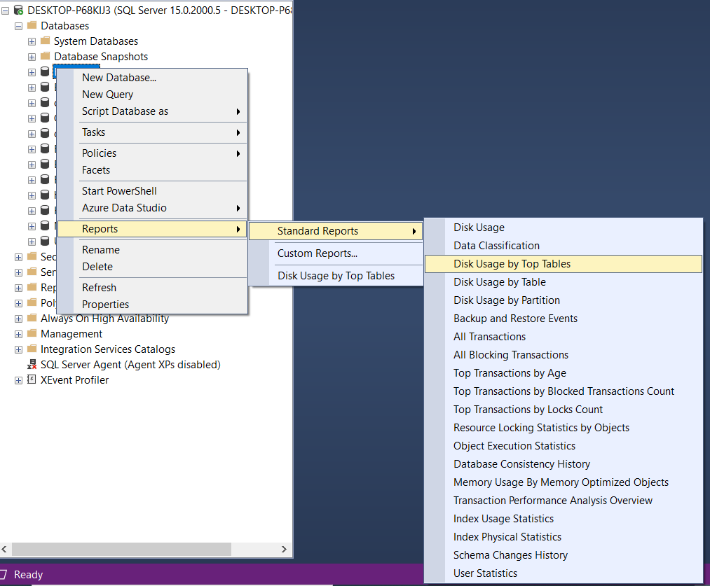
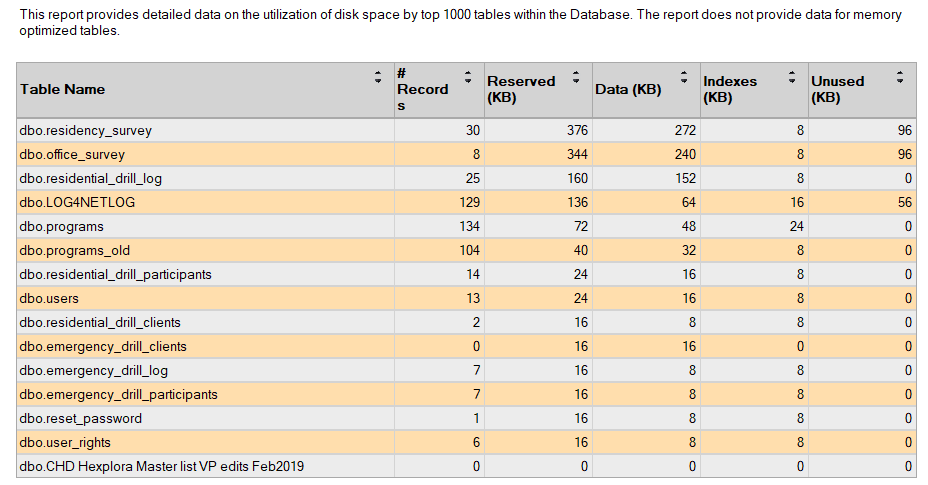

There are two convenient ways to review the row counts of tables in a SQL Server database: use a standard report in SQL Server Management Studio (SSMS), or query SQL Server's partition statistics.
Method 1: Use the SSMS Disk Usage by Top Tables report
- Connect to the SQL Server instance in SSMS and expand the database you want to inspect. Your account needs permission to view the database information.
- Right-click the database and choose Reports → Standard Reports → Disk Usage by Top Tables.

- Review the report for the tables' row counts and space usage.

Method 2: Query row counts and space usage
Run the following query in the database you want to inspect. It aggregates partition statistics for each table's heap or clustered index, avoiding duplicate counts from nonclustered indexes. Space values are in kilobytes.
SELECT
s.name AS SchemaName,
t.name AS TableName,
SUM(ps.row_count) AS RowCount,
SUM(ps.reserved_page_count) * 8 AS ReservedSpaceKB,
SUM(ps.used_page_count) * 8 AS UsedSpaceKB
FROM sys.tables AS t
INNER JOIN sys.schemas AS s
ON s.schema_id = t.schema_id
INNER JOIN sys.dm_db_partition_stats AS ps
ON ps.object_id = t.object_id
AND ps.index_id IN (0, 1)
GROUP BY
s.name,
t.name
ORDER BY
RowCount DESC,
s.name,
t.name;The partition statistics provide efficient metadata-based counts and storage information for comparing tables. A row count from these statistics is not a transactional exact count at a particular instant. If you need an exact count for a specific table, run COUNT_BIG(*) against it, for example:
SELECT COUNT_BIG(*) AS ExactRowCount
FROM dbo.YourTable;Note: The results you can see depend on your database permissions. Ask your database administrator for the appropriate access if the report or metadata query is unavailable.